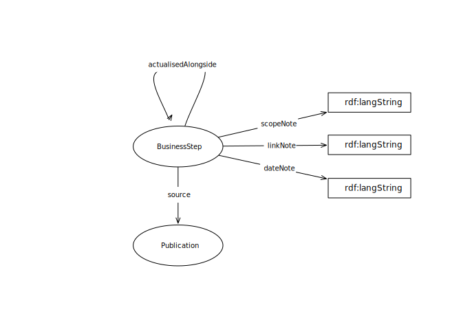

IRI: http://parliament.uk/ontologies/procedure-step-annotation/BusinessStep
IRI: http://parliament.uk/ontologies/procedure-step-annotation/actualisesAlongside
IRI: http://parliament.uk/ontologies/procedure-step-annotation/source
IRI: http://parliament.uk/ontologies/procedure-step-annotation/actualisationNote
IRI: http://parliament.uk/ontologies/procedure-step-annotation/dateNote
IRI: http://parliament.uk/ontologies/procedure-step-annotation/linkNote
This HTML document was obtained by processing the OWL ontology source code through LODE, Live OWL Documentation Environment, developed by Silvio Peroni.